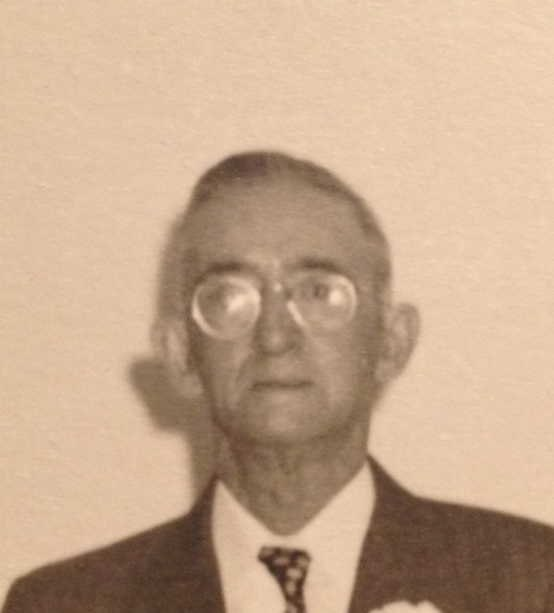
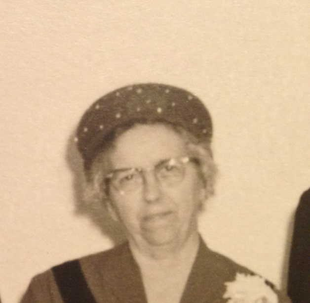
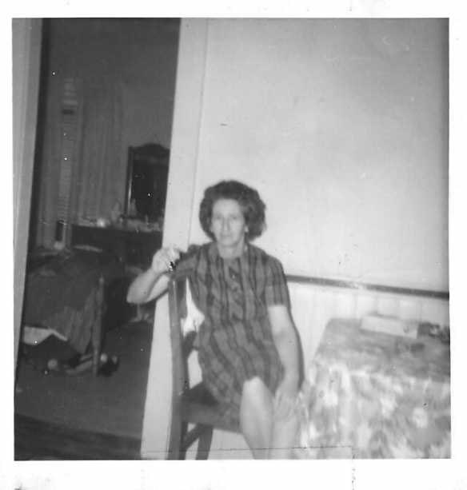
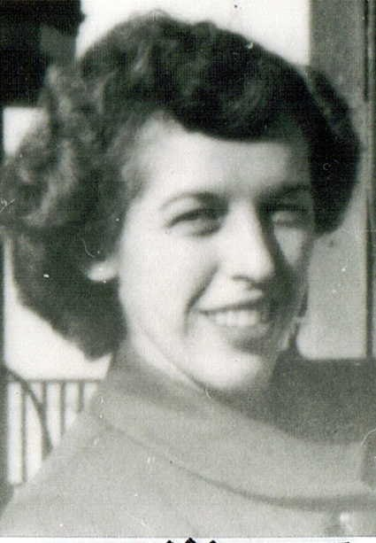
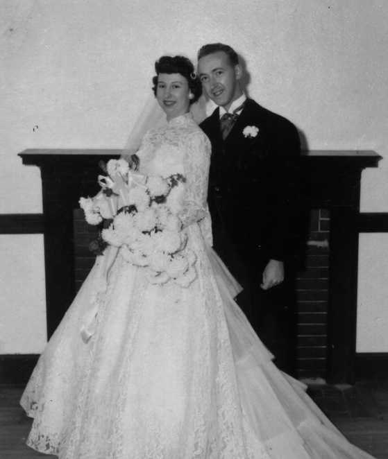
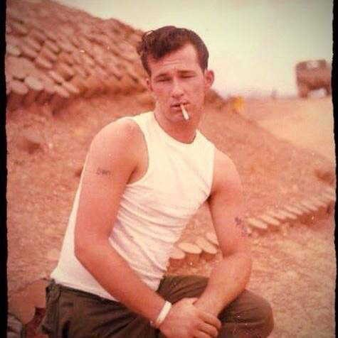

Theresa Ann Riley was born 29 March 1937 and grew up in Lowell, Massachusetts, the eldest of ten children of Thomas J. Riley and Helen Hodge. On 29 December 1954, at seventeen, she married a Marine sergeant from Clinton County, Indiana named Harold Sloan, at Morehead City, North Carolina, near his base at Cherry Point. She spent the rest of her life around Cambria and the farm — the Christmas Book records that in 1973 “Theresa got Honda Motorcycle for Xmas” — and died 5 July 2000. Her obituary lists five brothers and four sisters, all still back East. She and Grandpa Harry are buried at Kilmore.


The millsFour Irish families
Lowell was America’s first great factory town, and by the time the Rileys got there the mills ran on Irish labor. Every line of Grandma Terry’s family that Ben could trace leads to an Irish Catholic immigrant of the 1850s–1880s, and nearly every job is a mill job:
- Daniel Riley, born in Ireland about 1855, is a “woolsorter” in the 1880 census, with his wife Ellen Manning and four small children — Thomas, Charles, Lizzie and Mary.
- His son Thomas M. Riley, born at Lawrence in 1875, was a “mill operative” when he married Emily Campbell, another mill operative, in 1902, a priest officiating; by 1910 he was a weaver in a carpet mill. Emily’s mother was Mary Sherlock, born about 1854 to Patrick and Bridget Sherlock, both from Ireland and still living in Lowell in 1900.
- Annie Feeley Hodge, born in Ireland and landed in 1880, was a widow of forty-five in 1910, keeping house for her son and for her Feeley brothers, who worked as labellers in a “laboratory” — most likely one of Lowell’s patent-medicine houses.
- Her son William Bernard Hodge (1886–1957) rose to foreman at the W. H. Bagshaw Company on Warren Street; he gives the same employer on his draft cards in both World Wars. He married Christina Condon (1890–1972), born on Christmas Eve to John Condon, laborer, and his wife Nellie, both from Ireland.
William and Christina raised seven children in Sacred Heart parish. Their daughter Helen married Thomas J. Riley. In the 1940 census the young couple are renting for ten dollars a month among Lithuanian, Polish, Irish and French-Canadian mill families; Thomas is an attendant at the state hospital, earning $525 a year, and the household includes Theresa, age three, and a baby brother.




The census pages, draft cards, birth and marriage registers and obituaries behind this page are in the research folder under Genealogy / Sloan side / Massachusettes Docs. This is the least-explored branch of the tree: nobody has yet found where in Ireland any of these families came from.